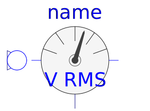
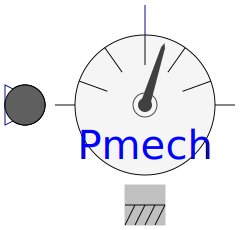
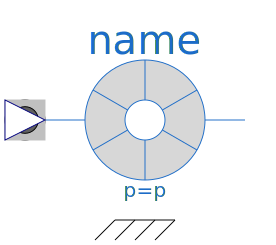

| Name | Description |
|---|---|
|  VoltageQuasiRMSSensor | Length of space phasor -> RMS voltage |
| Length of space phasor -> RMS current | |
| Instantaneous power from space phasors | |
|  MechanicalPowerSensor | Mechanical power = torque x speed |
| Rotor lagging angle | |
|  HallSensor | Hall sensor |